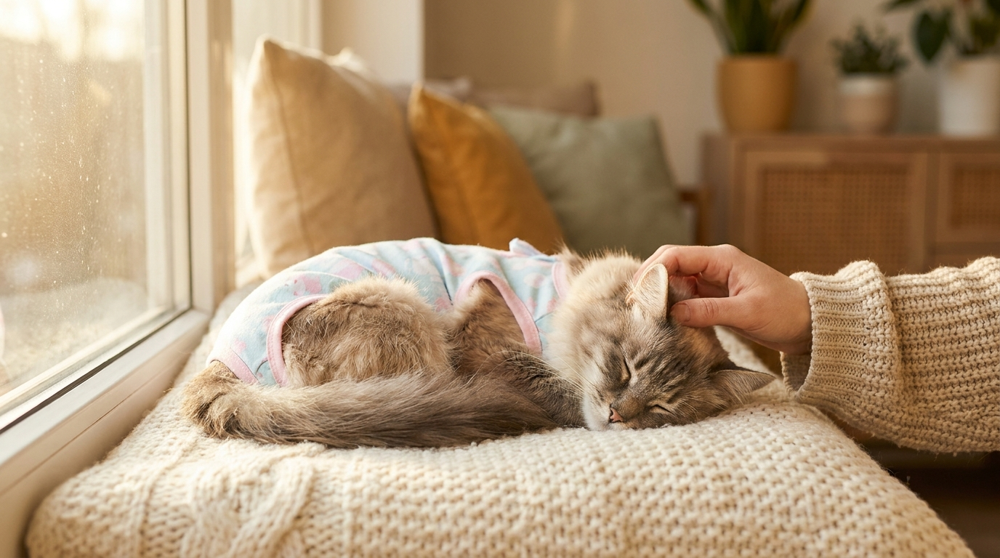

Стерилизация кошки: когда делать, как проходит операция и восстановление

29 мая 2026 · 10 минут чтения · Здоровье · Хирургия · Кошки
Стерилизация кошки — одна из самых распространённых плановых операций в ветеринарии. В России её делают в каждой второй клинике, и при правильной подготовке она занимает 30–50 минут. Но вопросов у хозяев обычно много: когда лучше, больно ли кошке, что делать после, зачем попона и правда ли, что «лучше пусть родит хоть раз». Отвечаем на каждый — без воды, с цифрами.
Стерилизация, кастрация, овариогистерэктомия: разбираемся в терминах
В обиходе эти слова часто путают, и это создаёт путаницу в разговорах с врачом. Знание терминологии помогает задавать правильные вопросы.
- Кастрация — строго говоря, удаление только яичников (овариэктомия). В российской практике термин традиционно применяют к самцам, но в ветеринарии он может означать удаление любых половых желёз.
- Стерилизация — лишение способности к размножению любым методом. В обиходе этим словом называют любую операцию у самок.
- Овариогистерэктомия (ОГЭ) — стандарт для кошек в РФ: одновременное удаление яичников и матки. Исключает и пиометру (гнойное воспаление матки), и гормон-зависимые опухоли молочных желёз.
- Овариэктомия — удаление только яичников без матки. Практикуется в ряде клиник, особенно лапароскопически, и считается достаточной при молодом возрасте и здоровой матке. Матка без яичников атрофируется и не причиняет проблем.
Когда записываетесь в клинику, уточните у врача: что именно будет сделано — ОГЭ или овариэктомия, и каким доступом (срединным или боковым). Оба варианта приемлемы, но важно понимать, что именно делается вашей кошке.
Оптимальный возраст: когда стерилизовать
Ключевая рекомендация современной ветеринарной медицины: до первой течки, в 5–8 месяцев. Это не просто удобство — это вопрос онкологического риска.
Риск развития опухолей молочных желёз у кошки (в 90% случаев злокачественных) напрямую зависит от количества пережитых течек:
- Стерилизация до первой течки снижает риск опухолей молочных желёз на 91%.
- После первой, но до второй течки — снижение на 86%.
- После двух течек и более — снижение уже только на 11%.
- После пяти течек — статистически значимого снижения риска нет.
Первая течка у кошек обычно наступает в 5,5–10 месяцев в зависимости от породы и сезона (коты с длинным световым днём «запускают» половой цикл быстрее). Оптимально — сделать операцию до 7 месяцев.
Если вы не успели до первой течки — не страшно. Стерилизовать кошку можно в любом возрасте, даже в 10–12 лет. Польза будет: устраняется риск пиометры, прекращаются течки и связанный с ними стресс, нормализуется поведение. Просто онкопрофилактический эффект для молочных желёз уже значительно ниже.
Миф «пусть родит один раз для здоровья»: разбор
Это один из самых живучих мифов в кошководстве. Его придерживается значительная часть хозяев, которые искренне хотят сделать лучше. На самом деле за этим мифом нет ни одного научного факта — только народная традиция и антропоморфизм.
- «Роды нормализуют гормональный фон». Такого механизма не существует. После родов гормональный фон возвращается к исходному, течки возобновляются через несколько недель или месяцев, все риски остаются.
- «Кошка после родов станет спокойнее». Не станет. Поведение, связанное с половым циклом (громкое мяуканье, метки, попытки сбежать, агрессия), после родов полностью возвращается с первой же течкой — а она случится уже через 4–8 недель после отъёма котят.
- «Это полезно для психики кошки». У кошек нет психологической потребности реализовывать материнский инстинкт. Нестерилизованные кошки без котят не «страдают от нереализованности». Страдают от гормонального стресса каждой течки — и это реально.
- «Всего один помёт — не проблема». Нереализованная течка (без беременности) статистически опаснее с точки зрения онкологии, чем беременность. Но беременность не снижает риск — она его просто «переносит» на следующий цикл.
Реальная ситуация: каждая течка — это гормональная буря и стресс для кошки. Каждая нереализованная течка (кошка «кричит», но не беременеет) повышает риск пиометры и опухолей. Один помёт — это минимум 3–5 котят, которых нужно пристраивать. В России каждый год миллионы кошек погибают на улице. Стерилизация — это ответственный выбор, а не лишение кошки чего-то важного.
Подготовка к операции: что нужно сделать
- Голодная диета 8–12 часов до операции. Воду убирают за 2–4 часа. Это обязательное условие безопасной анестезии: полный желудок при рвоте под наркозом может вызвать аспирационную пневмонию. Это не перестраховка клиники — это физиология наркоза.
- Анализы. Для молодых здоровых кошек (до 3 лет) в большинстве клиник достаточно клинического осмотра. Для кошек старше 5 лет, с лишним весом, хроническими болезнями, у пород с кардиорисками (мейн-куны, рэгдоллы, британцы) — общий анализ крови, биохимия, ЭКГ или ЭхоКГ. Это выявляет скрытые проблемы, влияющие на выбор анестетика.
- Оптимальная дата. Лучше планировать между течками — в фазу покоя. Во время течки матка и яичники усиленно кровоснабжаются, риск интраоперационного кровотечения выше. Если течка только прошла — подождите 2–3 недели.
- Переноска с любимой подстилкой. Запах дома успокаивает кошку в стрессовой обстановке клиники. Положите в переноску старый носок или футболку с вашим запахом.
Как проходит операция: детали
Стандартная овариогистерэктомия шаг за шагом:
- Анестезия. Комбинированный протокол — инъекционная премедикация (успокоение, обезболивание) плюс ингаляционный наркоз через маску или интубацию. Кошка не чувствует ни боли, ни стресса от операции.
- Доступ. Два основных варианта — срединный разрез по белой линии живота (5–6 см) или боковой доступ через бок (3–4 см). Оба безопасны и надёжны. Боковой — чуть меньший разрез. Срединный — лучше визуализация органов. Выбор остаётся за хирургом.
- Лапароскопическая стерилизация. Три прокола диаметром 5 мм вместо разреза. Значительно меньше боли после операции, быстрее заживление, ниже риск послеоперационных осложнений. Стоит дороже, доступна в крупных городах России. Оптимальный выбор для молодых активных кошек.
- Продолжительность. Стандартная ОГЭ — 30–50 минут. Лапароскопическая — 40–70 минут (дольше из-за подготовки оборудования).
- Выход из наркоза. 1–3 часа в клинике под наблюдением. Кошку отдают домой, когда она уверенно держится на лапах, нет рвоты, дыхание стабильное.
AI-оценка не заменяет очный приём ветеринара. Решение об операции, выборе метода и протоколе анестезии принимает хирург после осмотра конкретной кошки.
Восстановление: что нормально, что нет
Первые 24 часа — самый ответственный период:
- Кошка вялая, дезориентированная, может шататься, смотреть в стену, не реагировать — это нормально после наркоза. Положите на тёплую поверхность (грелку под одеяло), рядом поставьте воду.
- Не кормите первые 4–6 часов после возвращения домой. Потом предложите маленькую порцию влажного корма.
- Следите за температурой тела: в норме первые часы может быть чуть снижена (ниже 38°C) — это последствие наркоза. Если ниже 37°C — звоните в клинику.
Попона или защитный воротник — не «традиция», а необходимость. Кошка инстинктивно будет вылизывать шов — занесёт инфекцию и разлижет нити раньше, чем ткани срастутся. Попона носится 10–14 дней до снятия швов. Снимать «покормить и погулять» на час, конечно, можно — но под присмотром.
- Шов обрабатывайте по инструкции врача — обычно хлоргексидин 0,05% раз в сутки. Не йод, не зелёнка, не перекись — они замедляют заживление.
- Ограничьте активность на 10–14 дней: никаких прыжков, лестниц, активных игр.
- Следите за аппетитом и туалетом. Первый стул может быть через 24–48 часов — это норма после наркоза и голодной диеты.
Когда срочно к врачу: шов сильно покраснел и отёк — хуже, чем на второй день; выделения из шва (не небольшая сукровица, а гной или много крови); температура выше 39,5°C через сутки и более после операции; кошка не ест 48 часов; не ходила в туалет по-маленькому 48+ часов.
Цены в 2026 году и что влияет на стоимость
Диапазон широкий и зависит от города, типа клиники и метода операции:
- Районные и сетевые клиники (небольшие города): 2 500–6 000 руб. за стандартную ОГЭ.
- Сетевые клиники Москвы и Петербурга: 6 000–14 000 руб.
- Специализированные хирургические центры: 10 000–18 000 руб.
- Лапароскопическая стерилизация: 12 000–28 000 руб. в зависимости от клиники.
Уточняйте заранее, что включено в цену: наркоз, операция, послеоперационный осмотр, снятие швов — или это оплачивается отдельно. Попона и препараты для домашней обработки обычно идут дополнительно.
Риски наркоза при правильной подготовке — минимальны. Статистика летальности при плановой стерилизации у здоровой кошки — около 0,05–0,1%. Для сравнения: риск пиометры у нестерилизованной кошки к 10 годам составляет 25–30%, а летальность при экстренной операции по пиометре — 5–10%. Плановая операция в молодом возрасте несравнимо безопаснее.
🐾 Первая помощь — всегда под рукой
AnimaLife подскажет, что делать в тревожной ситуации с питомцем ещё до визита к врачу. Откройте в один тап.
Открыть AnimaLife → Открыть в MAX →
🐾 Понравился разбор?
Подпишитесь на канал — каждый день разбираем по одному тревожному симптому у кошек и собак: что в пределах нормы, а когда пора к врачу. Подпишитесь, чтобы не пропустить разбор, который может спасти здоровье вашего питомца.
Профилактика набора веса: главная задача после операции
Это реальный и очень распространённый риск. После стерилизации уровень эстрогенов резко падает, метаболизм замедляется, аппетит возрастает — потребность в калориях снижается примерно на 20–30%, а кошка просит есть столько же или больше. Без коррекции питания большинство кошек начинают набирать вес в течение 3–6 месяцев.
- Перейдите на корм с пометкой «для стерилизованных кошек» — меньше калорий на 100 г, скорректированное соотношение белка и жира, часто добавлены компоненты для профилактики МКБ (у стерилизованных кошек чуть выше риск мочекаменной болезни). Популярные линейки в России 2026: Royal Canin Sterilised, Hill's Science Plan Sterilised, Brit Care Sterilised, Purina Pro Plan Sterilised.
- Измеряйте порции по норме на упаковке — не «на глаз» и не «сколько хочет». Норма указана для конкретного веса — взвешивайте кошку раз в месяц первые полгода.
- Два кормления в день фиксированными порциями вместо постоянного доступа к еде.
- Если кошка просит есть — предложите часть суточной нормы влажного корма: он занимает больше места в желудке при меньшей калорийности.
← Все статьи · Открыть AnimaLife в Telegram · RSS